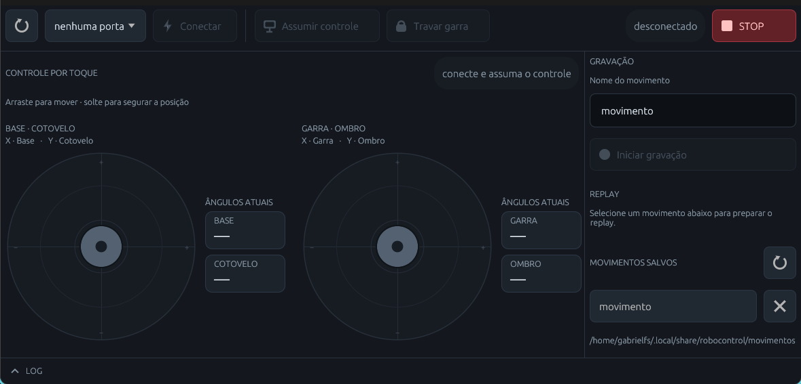

Arquitetura
O firmware é a autoridade. O app envia alvos a 20 Hz e o firmware interpola cada junta com uma rampa fixa (cerca de 38°/s), respeita os limites e mantém a pose quando não chega comando novo. Se o USB falhar, o braço não dá tranco: o watchdog de 500 ms segura a posição e devolve o controle ao joystick.
#J devolve congelando; #H cancela o home e segura as juntas.#L1 mantém a pressão; #L0 libera a abertura.RoboControl

- Pads: esquerdo = base (X) e cotovelo (Y); direito = garra (X) e ombro (Y). Soltar o dedo centraliza e segura a posição.
- Assumir controle (M): adota os ângulos atuais e trava o joystick físico.
- Gravação: captura a pose a 20 Hz, inclusive movendo no joystick; salva em
~/.local/share/robocontrol/movimentos/. - Replay: espera a pose inicial, reproduz com pausa, velocidade 0,5×/1×/2× e loop; STOP cancela.
- Log: último evento na barra; clique para expandir, copiar ou limpar.
Rodar o app
# Linux / macOS
cd app
cargo run --release
# Linux: instalar no menu
cd app && ./install.sh# Windows (PowerShell)
cd app
cargo run --release
# ou: cargo build --release; .\target\release\robocontrol.exeEscolha a porta → Conectar → Assumir controle (PC). Portas típicas: Linux /dev/ttyACM0 ou /dev/ttyUSB0; macOS /dev/cu.usbmodem*; Windows COM3. No Linux, o usuário precisa estar no grupo dialout (Arch: uucp).
Teclado
Os atalhos valem com o app em foco e nenhum campo de texto ativo. O movimento exige o PC no controle (M).
| Tecla | Ação |
|---|---|
A / D | Base: girar à esquerda / direita |
W / S | Cotovelo: subir / descer |
← / → | Garra: fechar / abrir |
↑ / ↓ | Ombro: subir / descer |
Shift + movimento | Modo fino (metade da velocidade) |
M / J | Assumir / devolver o controle |
Espaço | STOP |
G | Travar / liberar a garra |
R / P / L | Gravar / reproduzir / loop |
1 / 2 / 3 | Velocidade 0,5× / 1× / 2× |
H / F1 | Abrir / fechar a lista de atalhos |
Esc | Fechar a lista ou o modal de ângulo |
Gravação e replay
Gravar captura a pose a 20 Hz, inclusive quando você está movendo no joystick físico — é o “ensinar fazendo”. Parar e salvar remove pausas paradas no início/fim e deixa o movimento carregado. Se o cabo cair ou a placa reiniciar, a gravação em andamento é encerrada e salva com sufixo _2, _3…
O replay espera o braço alcançar a pose inicial antes de iniciar o cronômetro. Tocar num pad, usar STOP ou o botão de pausa cancela. Os arquivos ficam em ~/.local/share/robocontrol/movimentos/ (Windows: %APPDATA%\robocontrol\movimentos).
Firmware
Sketch: firmware/braco_4dof/braco_4dof.ino, versão 1.3.4. Usa apenas Servo.h e EEPROM.h do core AVR.
# Arduino IDE: abra o sketch, selecione Arduino Uno e a porta, Upload
# ou arduino-cli
arduino-cli core install arduino:avr
arduino-cli compile --fqbn arduino:avr:uno firmware/braco_4dof
arduino-cli upload -p /dev/ttyACM0 --fqbn arduino:avr:uno firmware/braco_4dofA pinagem está em Hardware → Pinagem. A simulação no Wokwi usa uma cópia idêntica do sketch; depois de mexer no firmware, sincronize com cp firmware/braco_4dof/braco_4dof.ino wokwi/sketch/sketch.ino.
Protocolo serial
115200 baud, linha inteira terminada em newline. O firmware é a fonte da verdade; o app só propõe alvos.
| Comando | Formato | O que faz |
|---|---|---|
#P | #P90;60;45;20 | Alvos absolutos em graus (base, ombro, cotovelo, garra); reenviar é o heartbeat |
#V | #V-100;0;50;0 | Sticks virtuais de −100 a 100 (esq X/Y, dir X/Y) a 20 Hz |
#M | #M | Assume o controle e congela no ângulo atual |
#J | #J | Devolve ao joystick congelando a pose |
#H | #H | STOP: cancela o home e segura as juntas agora |
#L0 / #L1 | #L1 | Libera / trava a pressão da garra |
#S | #S | Status → S<b>;<o>;<c>;<g>;<modo>;<trava> |
#B | #B | Diagnóstico → versão, boots=N, limites e centros |
Diagnóstico
boots=Né o contador de resets. Se mudar durante o movimento, a placa reiniciou: revise a fonte externa e o GND comum.- Log do app: erros em vermelho, STOP e gravação em destaque; o painel copia e limpa.
- STOP: para o movimento e desenergiza os servos em ~0,6 s.
- Trava da garra: com
#L1, nem o pad nem o replay abrem a pinça. - Sem app:
stty -F /dev/ttyACM0 115200 raw -echoeprintf '#B\n' > /dev/ttyACM0; leia a resposta comcat.
Problemas comuns
A porta não aparece no app
Confira o cabo (alguns cabos só carregam), o driver CH340 em clones e o grupo dialout no Linux. Relogue após sudo usermod -aG dialout "$USER". No Windows, veja o COM no Gerenciador de Dispositivos.
O braço reinicia ou “pula” no meio do movimento
É alimentação. Use fonte externa de 5 V / 5 A com GND comum e capacitor de 1000 µF; não alimente os servos pelo USB. O contador boots=N confirma o reset.
Um servo treme ou fica com posição errada
Verifique o canal (D11, D10, D9, D5), o GND comum e a calibração da Posição 0. Faixas no software não substituem o curso mecânico: ajuste os limites antes de forçar.
A garra não abre
A trava D4 (#L1) mantém a pressão e bloqueia a abertura. Clique D4 ou use #L0 para liberar. Com a trava ativa, nem o replay abre a pinça.
O replay não começa
O replay espera a pose inicial. Se o braço estiver longe, ele move primeiro; use STOP para cancelar. Confira a velocidade e se o movimento foi salvo em movimentos/.
O app não assume o controle
Confirme o firmware 1.3.4 e o modo PC (#M). Se o joystick físico estiver ativo, o firmware ignora o PC até o app assumir. Devolver/STOP devolvem o comando à placa.